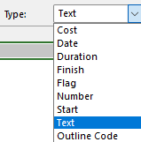
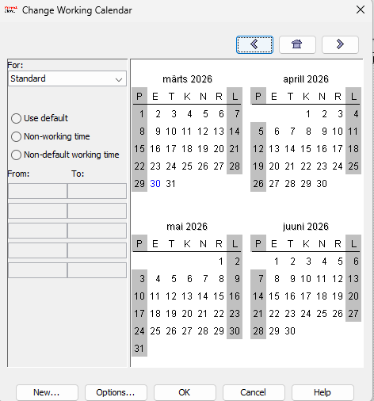
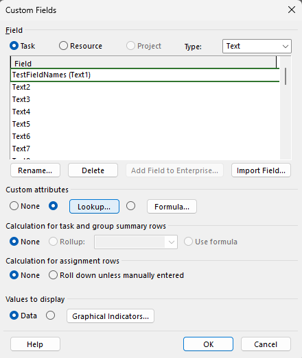
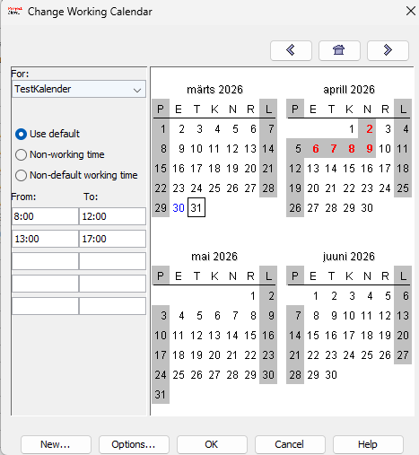
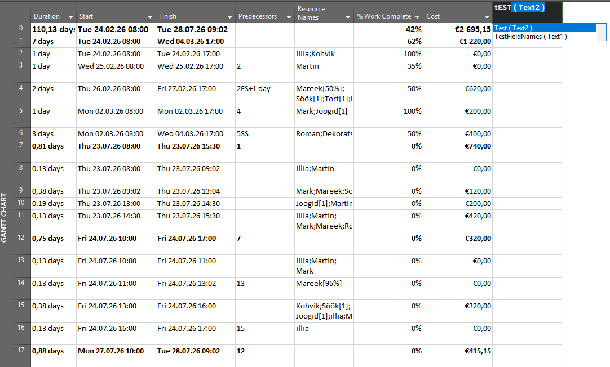
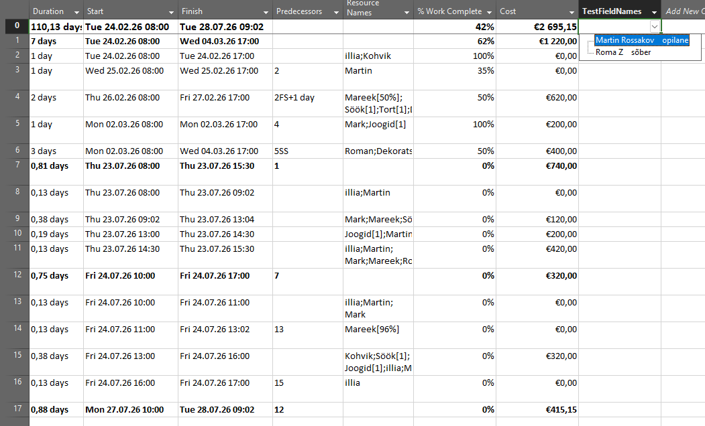

Mis on ProjectLibre ja kalendrid
ProjectLibre on tasuta projektijuhtimise tarkvara (sarnane Microsoft Projectile). See aitab planeerida ülesandeid, tähtaegu, ressursse ja jälgida projekti edenemist.
Kalendrid ProjectLibre’is määravad tööaja — millistel päevadel ja kellaaegadel tööd tehakse (näiteks tööpäevad, nädalavahetused ja pühad). Kalendreid kasutatakse selleks, et arvutada täpselt ülesannete ja kogu projekti kestust.
1. Uue kalendri loomine
Kalendri loomiseks pead minema oma projekti vahekaardile „Resource“ ja „Calendar“

2. Kalendri menüü
Teie jaoks avaneb vahekaart, kus on näha kõik kalendrid, seaded ja kuupäevad

3. Uee test kalendri loomine
Vajutame nuppu „New“ ja loome uue kalendri nimega „TestKalender“ ning teeme sellest standardkalendri koopia

4. Kalendripäevade seadistamine
Uues kalendris saame lisada tööaja ja märkida punasega vabad päevad. Sinisega on märgitud tänane päev.

5. Kalendri kasutamine
Meie projektis klõpsame kaks korda kindlale kuupäevale, avame jaotise „Advanced“ ja valime rippmenüüst „Task Calendar“ meie loodud kalendri.

6. Kalender töötab
Nüüd ilmub rakendatud projektile vasakule kalendriikoon, mis tähendab, et kalender on ülesannetele rakendatud ja kõik toimib
